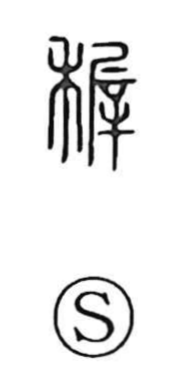

稚

Uncategorized
Kun: osanai | On: chi
young ・ immature ・ infant
Explanation
A phono-semantic character, originally written 穉: the element 禾 (grain) gives the semantic field, while the phonetic is 雉 (chi), a value also seen in the character 遲 “late.” In the Shuowen, 穉 is explained as “young grain,” from which the senses “young” and “juvenile” arise; by extension it can also carry the nuance of “late.” The word is especially used of persons.